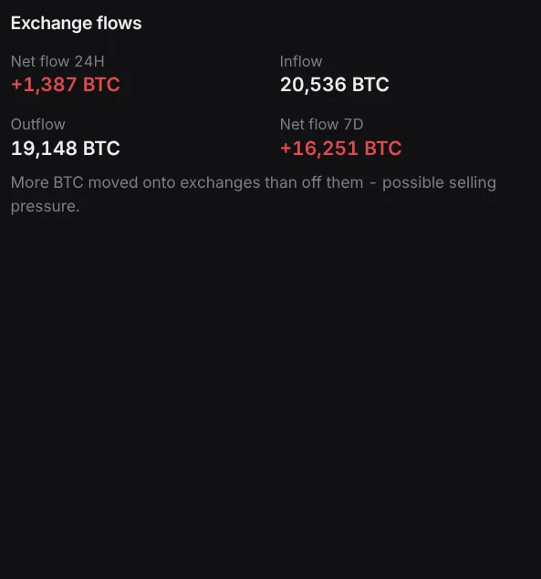

More bitcoin went onto exchanges than left: net 1,387 BTC in a day, and Binance took 2,479
DeepSea's exchange flow panel shows 20,536 BTC in and 19,148 BTC out. Kraken, Bitfinex and OKX lost coins while Binance and Bybit gained.
Key points
- Net flow over 24 hours: +1,387 BTC (about $90 million), and +16,251 BTC (about $1.05 billion) over 7 days.
- Binance had the biggest net inflow, +2,479 BTC. Bybit added 342 BTC.
- Kraken (-644), Bitfinex (-642) and OKX (-356) saw net outflows.
 What DeepSea's data shows
What DeepSea's data shows
DeepSea's dashboard tracks labeled exchange wallets. For bitcoin over 24 hours it shows 20,536 BTC in, 19,148 BTC out, a net +1,387 BTC. Over 7 days the net is +16,251 BTC. Coins moving onto exchanges can mean holders prepare to sell, though DeepSea does not show the reason.
By exchange (in, out, net): Binance 6,543, 4,064, +2,479; Kraken 9,943, 10,587, -644; Bitfinex 50, 692, -642; OKX 2,337, 2,693, -356; Bybit 1,106, 764, +342; Crypto.com 174, 3, +171; Gate 141, 51, +91; KuCoin 217, 271, -54.

Data: DeepSea (desea.io), checked November 17, 2026, 6:47 a.m. ET.
Checking the numbers
The eight exchange nets add up exactly to +1,387 BTC, matching the panel total. CoinGecko priced bitcoin at $64,733 at 6:40 a.m. ET, so 1,387 BTC is about $89.8 million and 16,251 BTC about $1.05 billion.
One caution: the panel's "largest transfers" list showed October dates, so we did not use it. We could not open an independent explorer in this run. Data from DeepSea and CoinGecko.
Exchanges with net bitcoin inflow, 24 hours
BTC
Source: DeepSea exchange flows, 6:47 a.m. ET, November 17, 2026. Kraken, Bitfinex, OKX and KuCoin had net outflows.
New to this?
Exchange flow data counts coins that enter or leave wallets DeepSea has labeled as belonging to an exchange. A deposit can mean a holder plans to sell or trade, while a withdrawal often means a holder moves coins to private storage. Neither is certain. Net flow is inflow minus outflow: 20,536 minus 19,148 is 1,388 BTC, shown by DeepSea as 1,387 after rounding. Readers use the 7-day figure to see whether a one-day swing is part of a trend. Here it is: +16,251 BTC over a week, about 11.7 times the 24-hour net.

LC Insight analysis
This section is our reading of the facts above, not a statement of fact.
- We think the 7-day total of 16,251 BTC matters more than one day: coins have flowed toward exchanges for a week while bitcoin is near $65,000.
- Net flows are one clue. Coins can sit on an exchange for custody, not for sale.
What's next
- Whether Binance's inflow continues
- A turn to net outflow across the eight exchanges
Disclaimer. This article is based on public information and the sources listed below as of the update time shown. It is for information only and is not investment, legal or tax advice. Figures may change as companies and authorities publish new data.